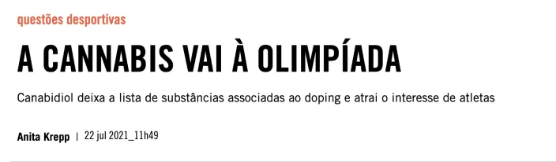
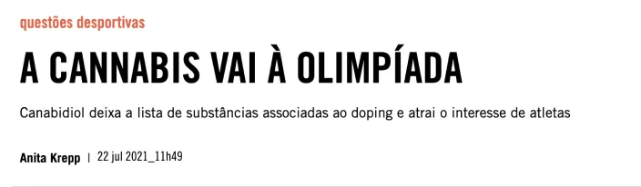

Política de Privacidade
1. INTRODUÇÃO
Esta Política de Privacidade descreve como a YINFLOW LTDA, pessoa jurídica de Direito Privado, inscrita no CNPJ sob o nº 42.516.954/0001-00, estabelecida na Avenida Brigadeiro Faria Lima, nº 2369, Conj. 1102 - Bairro: Jardim Paulistano, São Paulo/SP - CEP 01452922, coleta, usa e protege os dados pessoais dos USUÁRIOS que acessam e utilizam as funcionalidades e serviços do site Yinflow.Life (disponível em
https://yinflow.life). Esta política está em conformidade com a Lei Federal nº 12.965, de 23 de abril de 2014 (Marco Civil da Internet) e a Lei Federal nº 13.709, de 14 de agosto de 2018 (Lei de Proteção de Dados Pessoais).
2. COLETA E USO DE DADOS
2.1. Nós obtemos seus dados pessoais através de seu cadastro realizado no ato de seu registro ou uso de nossos serviços. Quando você se registra em nossa plataforma ou aplicativo, pedimos que forneça dados básicos, incluindo seu nome, endereço de e-mail.
2.2. Você também poderá adicionar informações que incluem, mas não se limitam a:
-
Nome
-
Sobrenome
-
Estado civil
-
Data de nascimento
-
CPF
-
Município
-
Município
-
Logradouro
-
Número
-
Bairro
-
Estado
2.3. O uso de nossos serviços pode se dar por meio de nosso site ou aplicativo móvel. Nossos serviços permitem: agendamento de consulta com especialistas, avaliação de sua experiência, verificação do histórico de suas visitas e gerenciamento de sua conta de usuário. Em sua conta de usuário no aplicativo de celular, você pode gerenciar notificações push e outras notificações do sistema.
2.4. Os dados serão armazenados em nossa plataforma e transferidos ao profissional de saúde e/ou para a clínica que emprega o especialista. Uma vez que seus dados pessoais são transferidos para o profissional de saúde ou estabelecimento, este se torna, em acordo com a legislação, um controlador de dados que processará seus dados pessoais para seus próprios fins.
3. Compartilhamento de Dados
3.1. Podemos compartilhar seus dados pessoais com outras empresas que operam dados para a Yinflow.Life sob cláusulas de proteção de privacidade estabelecidas contratualmente, exclusivamente para fins de prestação de serviços para você. No entanto, não compartilhamos ou vendemos sua opção de opt-in de SMS ou seu número de telefone para fins de SMS.
3.2. Exemplos de categorias de operadores de dados incluem:
-
Provedores de hospedagem em nuvem e manutenção de servidores
-
Ferramentas de comunicação
-
Ferramentas de suporte ao cliente
-
Consultores externos, auditores ou conselheiros
-
Convênios e operadoras de saúde, prestadores de serviços de pagamento, bancos, agências de referência de crédito e prevenção de fraudes e companhias de seguros
-
Empresas de TI que nos fornecem software e serviços similares
-
Empresas que realizam a autorização de consultas e procedimentos por meio das operadoras de planos de saúde
-
Empresas que permitem a emissão de receitas, prescrições eletrônicas e notas fiscais
3.3. Podemos compartilhar dados a fim de atender requisitos legais, fazer cumprir nossas políticas, fazer contato com autoridades judiciais ou regulamentares, quando exigido pela lei aplicável, e proteger nossos direitos e propriedade.
3.4. Também podemos compartilhar suas informações pessoais com outras entidades empresariais, caso planejemos nos fundir, receber investimentos ou ser adquiridos por uma entidade empresarial.
4. Dados Anonimizados
4.1. Os dados sensíveis, em especial, os dados de saúde que você nos fornece serão anonimizados. A anonimização é uma técnica de processamento de dados que retira ou modifica dados que possam identificar uma pessoa, resultando em informações anonimizadas que não podem ser associadas a um indivíduo específico.
4.2. Com a análise de dados anonimizados, podemos criar produtos e recursos seguros e úteis para você, a partir da melhor compreensão das necessidades e preferências de nossos usuários. Podemos também compartilhar os dados anonimizados com outras pessoas, sem comprometer a privacidade de nossos clientes.
4.3. Alguns de nossos provedores (operadores de dados) estão baseados fora do Brasil, contudo, para podermos transferir seus dados pessoais para países terceiros, sempre garantimos que essas transferências atendam aos requisitos de segurança da Proteção de Dados Pessoais (LGPD), Lei nº 13.709, de 14/08/2018.
5. Tempo de Processamento de Dados Pessoais
5.1. A qualquer momento, se você tiver alguma dúvida sobre seus dados pessoais, poderá entrar em contato conosco através dos nossos canais de comunicação. Você possui o direito de requerer a qualquer momento a eliminação dos dados submetidos, por e-mail:
dpo@yinflow.life ou por correspondência para o nosso endereço.
5.2. Nós apenas manteremos as informações que coletamos sobre você pelo tempo necessário para os propósitos acima estabelecidos ou conforme necessário para cumprir quaisquer obrigações legais às quais estamos sujeitos.
5.3. O período para o qual teremos informações sobre você variará dependendo do tipo de informação e dos propósitos para os quais as utilizamos. Em geral, manteremos nossos registros por até 5 anos depois que você terminar seu relacionamento conosco, a fim de cumprir com nossas obrigações legais. Para obter mais detalhes, consulte a tabela a seguir:
| Fornecendo-lhe nossos serviços |
Processaremos seus dados pessoais até que você tenha uma conta de usuário ou um contrato de serviço ativo. Se você excluir sua conta de usuário ou contrato de serviço for rescindido, processaremos seus dados pessoais pelo período adicional de 5 anos a partir da data de exclusão. |
| Dados dos pacientes: Reservar uma visita ou organizar um exame médico |
Processaremos seus dados pessoais até que você tenha uma conta de usuário. Se você excluir sua conta de usuário, processaremos seus dados pessoais pelo período adicional de 5 anos. |
| Informações técnicas e estatísticas |
Processaremos seus dados pessoais até que você tenha uma conta de usuário. Se você excluir sua conta de usuário, processaremos seus dados pessoais pelo período adicional de 5 anos. |
| Marketing |
Processaremos seus dados pessoais até que você retire seu consentimento para fins de marketing, incluso nesta Política de Privacidade ou se oponha ao processamento de seus dados pessoais. Para retirar o seu consentimento, entre em contato com dpo@yinflow.life. |
| Queixas |
Processaremos seus dados pessoais por 5 anos depois que você tenha apresentado uma reclamação. |
| Funcionalidade de armazenamento de dados de saúde para compartilhamento com profissionais de saúde |
Os dados de saúde incluídos em seu perfil de saúde serão excluídos após a desativação da conta ou se você revogar seu consentimento. O restante dos dados será mantido por 5 anos após você excluir o Perfil de Saúde ou sua conta. |
| Prontuários médicos |
O tempo de guarda de prontuário médico no Brasil corresponde a 20 anos, conforme a Lei 13.787/18, que disciplina a digitalização e a utilização de sistemas informatizados para a guarda, o armazenamento e o manuseio de prontuários de pacientes. |
| O que é feito com meus dados depois de 20 anos? |
Conforme Lei nº 13.787, de 27 de dezembro de 2018: “Art. 6º Decorrido o prazo mínimo de 20 (vinte) anos a partir do último registro, os prontuários em suporte de papel e os digitalizados poderão ser eliminados. § 1º Prazos diferenciados para a guarda de prontuário de paciente, em papel ou digitalizado, poderão ser fixados em regulamento, de acordo com o potencial de uso em estudos e pesquisas nas áreas das ciências da saúde, humanas e sociais, bem como para fins legais e probatórios. § 2º Alternativamente à eliminação, o prontuário poderá ser devolvido ao paciente. § 3º O processo de eliminação deverá resguardar a intimidade do paciente e o sigilo e a confidencialidade das informações. § 4º A destinação final de todos os prontuários e a sua eliminação serão registradas na forma de regulamento. § 5º As disposições deste artigo aplicam-se a todos os prontuários de paciente, independentemente de sua forma de armazenamento, inclusive aos microfilmados e aos arquivados eletronicamente em meio óptico, bem como aos constituídos por documentos gerados e mantidos originalmente de forma eletrônica.” |
6. Política de Cookies
6.1. Cookies são pequenos arquivos baixados em seu computador ou outro dispositivo que você usa para navegar em nosso site. A maioria dos sites usa cookies. Normalmente, um cookie inclui as seguintes informações: o nome do site de onde ele veio; quanto tempo o cookie ficará no seu computador ou dispositivo; e um valor (geralmente um número único gerado aleatoriamente). Alguns cookies podem incluir dados adicionais, em particular relacionados ao seu fuso horário ou idioma usado para navegação.
6.2. Este tópico descreve quais informações coletamos, como as usamos e por que às vezes precisamos armazenar cookies. Também compartilharemos como você pode impedir que esses cookies sejam armazenados, no entanto, isso pode rebaixar ou tornar certos elementos da funcionalidade do site disfuncionais.
6.3. Alguns cookies estão sempre ligados quando você nos visita e você não pode desligá-los a menos que altere as configurações do seu navegador. Chamamos estes de cookies necessários. Nós os usamos para garantir que nossos serviços digitais funcionem corretamente e permitam o uso de funcionalidades, como login do usuário, gerenciamento de contas e persistência de dados e estados do sistema.
6.4. Também usamos cookies funcionais para tornar sua experiência mais amigável, em particular para lembrar e armazenar suas informações em nossos sites e personalizar o conteúdo de nossos serviços.
6.5. Também usamos cookies de desempenho para observar como nossos serviços são usados e obter estatísticas de uso.
6.6. Também usamos cookies de terceiros. Esses cookies podem rastrear como você usa sites diferentes, incluindo o nosso. Por exemplo, você pode obter os cookies de uma empresa de mídia social quando registra em nosso site usando um plugin de mídia social para autenticação ou quando simplesmente visita um site contendo geradores desses cookies. Caso deseje, você pode desativar esses cookies de marketing, conforme disposto em nosso site. Caso deseje, você pode desativar esses cookies, contando, ainda, com acesso ao nosso Data Protection Officer da Yinflow.Life disponível no endereço de e-mail:
dpo@yinflow.life.
7. Como Usamos Cookies
7.1. Usamos cookies por uma variedade de razões detalhadas abaixo. Para aproveitar melhor o nosso site, recomendamos que você configure seu dispositivo para aceitar todos os cookies. No entanto, usando as configurações do seu dispositivo, você pode desativar ou limitar certos tipos de cookies. Nós usamos cookies para:
-
Fornecer-lhe uma melhor experiência: os cookies são usados para melhorar sua experiência online. Eles podem ajudar de diferentes maneiras, incluindo: garantir que nossos sites carreguem mais rápido, mantê-lo conectado, mesmo em diferentes dispositivos, tornar os logins mais rápidos e acessíveis, lembrar seus dados, lembrar a maneira como você usou nosso serviço anteriormente, permitindo que você agende uma consulta ou sessão com um profissional de saúde de forma mais rápida e acessível, ou certificando-se de que nossas páginas são otimizadas para o seu navegador ou dispositivo.
-
Ajustar nossos serviços às suas preferências: os cookies podem nos ajudar a apresentar-lhe conteúdo que atenda melhor aos seus interesses e preferências. Os cookies também nos ajudam a personalizar nosso site para você.
-
Aprimorar a segurança: usamos alguns cookies para garantir a segurança de nossa plataforma.
-
Melhorar nossos sites: usamos cookies para melhorar nossos serviços e prever a maneira como os usuários usam nossos sites para torná-los melhores para nossos usuários.
-
Marketing: usamos alguns cookies para informar algoritmos de anúncios de nossos serviços e outras plataformas. Usamos esses cookies em cooperação com nossos parceiros de marketing (Google e Meta).
7.2. Usamos Cookies de Terceiros para perseguir nossos interesses legítimos e tornar nossos sites melhores para nossos usuários. A seguir detalhamos mais sobre esse compartilhamento.
-
Usamos o Google Analytics - Usamos o Google Analytics. O Google Analytics é amplamente utilizado por sites em todo o mundo. Esta ferramenta nos ajuda a entender, prever e ajustar nossos sites para nossos usuários e nos ajuda a gerenciar nossas bases de dados e melhorar nosso SEO (Search Engine Optimization).
-
Outras plataformas de anúncios e análise de dados, interligadas ao Google Analytics por meio da ferramenta Google Tag Manager. O processamento de cookies por estas ferramentas tem o exclusivo propósito de nos ajudar a saber se o conteúdo que nós fornecemos por meio de nossos canais de comunicação é interessante para você e também para podermos personalizar o conteúdo de nossa comunicação .
-
Também usamos cookies de terceiros para medir o uso do nosso site. Em particular, esses cookies podem registrar quanto tempo você gasta em nosso site e como você navega.
-
Também usamos cookies de terceiros para testar nossos novos recursos e produtos. Esses cookies nos ajudam a garantir que você receba uma experiência consistente de nossos serviços.
-
Também usamos botões de autenticação por mídia social e/ou contas de sites de terceiros. Para que estas funcionalidades operem corretamente, é necessária a escrita e leitura de cookies.
-
Usamos soluções técnicas fornecidas pelo Meta, Google e outros para melhor adaptar nossos serviços e oferecer uma melhor experiência ao usuário em nosso site e melhor performance das nossas comunicações nessas plataformas.
7.3. Dependendo do tipo de cookie, alguns deles são armazenados durante um curto período, enquanto outros são armazenados por períodos mais longos.
7.4. Utilizamos cookies de sessão - esses cookies autenticam seu navegador em nossos sistemas, e caso você esteja usando um computador ou celular compartilhado, recomendamos que exclua os cookies de seu navegador ao terminar sua sessão.
7.5. Utilizamos cookies persistentes - esses cookies permanecem armazenados mesmo que o seu navegador seja fechado ou seu dispositivo seja desligado, e estão ativos por um tempo definido no cookie. Usamos cookies persistentes quando precisamos saber quem você é para mais de uma sessão de navegação. Por exemplo, usamos para lembrar suas preferências para a próxima vez que você visitar ou caso tenha realizado o agendamento de uma consulta.
7.6. Você pode impedir a configuração de cookies ajustando as configurações do seu navegador. Você pode encontrar instruções sobre como fazer isso na tabela abaixo. Esteja ciente de que a desativação de cookies afetará a funcionalidade deste e de muitos outros sites que você visitar. A desativação de cookies geralmente resultará também na desativação de certas funcionalidades e recursos de nossos serviços. Portanto, recomenda-se que você não desabilite cookies para não prejudicar as funcionalidades. Caso deseje fazê-lo, poderá gerenciá-los da seguinte forma:
| Google Chrome |
|
Você deve clicar em três pontos que estão no canto superior do lado direito e abrir "configurações". No site de configuração, clique em "segurança e privacidade" para gerenciar cookies. |
| Safari |
|
Você deve ir para a página de configurações "preferências" e clicar em "segurança". Na seção "segurança", você pode gerenciar seus cookies. |
| Microsoft Edge |
|
Você deve clicar em três pontos que estão no canto superior do lado direito e abrir "configurações". No site de configuração, clique em "privacidade, pesquisa e serviços" para gerenciar cookies. |
| Mozilla Firefox |
|
Você deve clicar em três barras que estão no canto superior do lado direito e abrir "opções". No site de opções, clique em "segurança e privacidade" para gerenciar cookies. |
8. Como Obter uma Cópia dos Meus Dados
8.1. Para obter uma cópia de algum(s) dado(s) pessoal seu em nossas bases de dados, entre em contato com
dpo@yinflow.life a partir de um email que você já tenha usado em nossos sites.
9. Como Deletar os Meus Dados
9.1. Aqui, você poderá entender melhor como exercer seus direitos previstos pela Lei Geral de Proteção de Dados Pessoais (LGPD) e a condição para a portabilidade dos prontuários dos pacientes.
9.2. O usuário poderá ter acesso aos seus dados e solicitar a retificação dos mesmos por meio de solicitação formal feita a partir do email associado aos dados em questão para o endereço de email
dpo@yinflow.life.
9.3. Pelo canal de atendimento da YINFLOW, o USUÁRIO poderá também requerer: (i) a limitação do uso de seus dados pessoais; (ii) manifestar sua oposição ao uso de seus dados pessoais; ou (iii) solicitar a eliminação de seus dados pessoais coletados pela YINFLOW, desde que a eventual relação contratual entre o USUÁRIO e a YINFLOW tenha terminado, que não haja nenhuma finalidade de uso que legitime o tratamento e que tenha decorrido o prazo legal mínimo relacionado à retenção dos dados.
9.4. Tendo em vista o papel de Operador que a Yinflow.Life desempenha em relação aos dados de pacientes, a portabilidade dos dados de prontuários médicos deverá ser solicitada pelo próprio paciente ao profissional de saúde que o atende ou à clínica em que realiza tratamento de saúde, responsável pela guarda dos dados dos prontuários.
9.5. A Yinflow.Life trata os dados pessoais conforme as melhores práticas de segurança da informação e, em especial, os armazena na nuvem da Amazon Web Services, que aplica as mais avançadas técnicas de segurança da informação disponíveis no mercado, sendo certificada no atendimento a todos os requisitos de segurança determinados pela ISO 27018, o código de melhores práticas internacionais para proteção de dados pessoais na nuvem e outros. A lista completa de certificados e protocolos aderidos pela Amazon Web Services está disponível em:
AWS Compliance.
9.6. A própria Yinflow.Life também aplica medidas técnicas e administrativas aptas a proteger os dados pessoais de acessos não autorizados e de situações acidentais ou ilícitas de destruição, perda, alteração, comunicação ou difusão, observados a estrutura, a escala e o volume de suas operações, bem como a sensibilidade dos dados tratados e a probabilidade e a gravidade dos danos para os titulares dos dados. Dentre tais medidas, destaca-se o uso de técnicas de SALT, CAPTCHAs para a codificação da senha, backup, anonimização, segregação dos dados e controle de acesso aos dados com base na necessidade e permissão concedida pelo USUÁRIO.
7.4. Utilizamos cookies de sessão - esses cookies autenticam seu navegador em nossos sistemas, e caso você esteja usando um computador ou celular compartilhado, recomendamos que exclua os cookies de seu navegador ao terminar sua sessão.
7.5. Utilizamos cookies persistentes - esses cookies permanecem armazenados mesmo que o seu navegador seja fechado ou seu dispositivo seja desligado, e estão ativos por um tempo definido no cookie. Usamos cookies persistentes quando precisamos saber quem você é para mais de uma sessão de navegação. Por exemplo, usamos para lembrar suas preferências para a próxima vez que você visitar ou caso tenha realizado o agendamento de uma consulta.
7.6. Você pode impedir a configuração de cookies ajustando as configurações do seu navegador. Você pode encontrar instruções sobre como fazer isso na tabela abaixo. Esteja ciente de que a desativação de cookies afetará a funcionalidade deste e de muitos outros sites que você visitar. A desativação de cookies geralmente resultará também na desativação de certas funcionalidades e recursos de nossos serviços. Portanto, recomenda-se que você não desabilite cookies para não prejudicar as funcionalidades. Caso deseje fazê-lo, poderá gerenciá-los da seguinte forma:
10. Disposições Gerais
10.1. Aqui, você encontrará algumas informações gerais, como, por exemplo, o contato do Data Protection Officer (e-mail:
dpo@yinflow.life) da Yinflow.Life e que, se uma cláusula for julgada inválida, as demais automaticamente permanecerão válidas, sem necessidade de nova comunicação.
10.2. A Yinflow.Life não utiliza nenhum tipo de decisão automatizada que impacte o USUÁRIO.
10.3. A Yinflow.Life reserva a si o direito de alterar o teor desta
Política de Privacidade a qualquer momento, conforme a finalidade ou necessidade, tal qual para adequação e conformidade legal de disposição de lei ou norma que tenha força jurídica equivalente, cabendo ao USUÁRIO verificá-la sempre que acessar a Yinflow.Life.
10.4. Ocorrendo atualizações neste documento e que necessariamente demandam nova coleta de consentimento, a Yinflow.Life notificará o USUÁRIO pelos meios de contato fornecidos pelo mesmo.
10.5. Em caso de qualquer dúvida com relação às disposições constantes nesta
Política de Privacidade ou necessidade de contato com o Encarregado pelo Tratamento de Dados Pessoais (Data Protection Officer - DPO) da Yinflow.Life, o USUÁRIO poderá entrar em contato pelo Canal de Atendimento ao Titular pelo endereço de e-mail
dpo@yinflow.life.
10.6. Caso empresas terceirizadas realizem o tratamento de quaisquer dados coletados pela Yinflow.Life, elas deverão respeitar as condições aqui estipuladas e as melhores práticas de segurança da informação.
10.7. Caso alguma disposição desta
Política de Privacidade seja considerada ilegal ou ilegítima por autoridade da localidade em que o USUÁRIO resida, as demais condições permanecerão em pleno vigor e produção de efeitos.
10.8. O USUÁRIO reconhece que toda comunicação realizada por qualquer forma eletrônica é válida como prova documental, sendo eficaz e suficiente para a divulgação de qualquer assunto a que se refere, aos serviços prestados pela Yinflow.Life, bem como às condições de sua prestação ou a qualquer outro assunto nele abordado, ressalvadas as disposições expressamente diversas previstas nesta
Política de Privacidade.
11. Informações, Dúvidas, Sugestões e Reclamações
11.1. Em casos de informações, dúvidas, sugestões e reclamações, referentes a assuntos não relacionados a dados, os usuários poderão entrar em contato com a Yinflow.Life através do e-mail
falecom@yinflow.life, onde os e-mails serão respondidos no horário comercial de segunda a sexta em até 72 horas.
12. Lei Aplicável e Jurisdição
12.1. O presente documento será regido e interpretado segundo a legislação brasileira, no idioma português, sendo eleito o foro do domicílio da Cidade de São Paulo no que diz respeito aos dados e Aplicação da LGPD e o foro da comarca da Capital para dirimir qualquer litígio ou controvérsia envolvendo o presente documento, salvo ressalva específica de competência pessoal, territorial ou funcional pela legislação aplicável.
12.2. O usuário fica ciente que os serviços prestados fora do território brasileiro terão a sua jurisdição e aplicação de leis, o foro do país da compra ou prestação de serviços que serão contratados fora da jurisdição brasileira.
12.3. Exceto em casos em que for indicado o contrário, a empresa estrangeira YINFLOW LLC, parceira da YINFLOW LTDA detém direitos à propriedade intelectual de todo material proprietário, postado nas ferramentas e aplicativos Yinflow.Life, operados pela YINFLOW LTDA e profissionais de saúde parceiros, pois a mesma detém todos os direitos à propriedade intelectual reservados na forma da lei.


 
